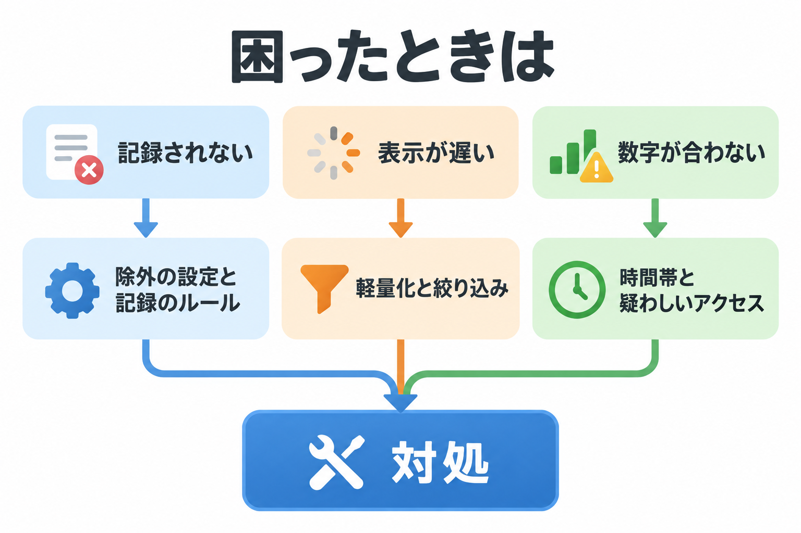

困ったとき
よくある困りごとを「症状 → 原因 → 対処」の順にまとめました。

アクセスが記録されない
原因: 記録しない条件に当てはまっているか、記録のしくみが動いていない可能性があります。
「記録されないアクセス」に当てはまらないかを確かめます（管理画面・画像などのファイル・除外パターン・サーバー自身・ボットの 404・User-Agent が空）。
ログアウトした状態や別のブラウザで公開ページを開き、メインタブで「過去24時間」を選んで確かめます。表示タイムゾーンが UTC だと、日本時間と 9 時間ずれて見えます。
「ログの管理」タブの「デバッグ情報」で、「✓ 存在」「✓ 登録済み」になっているかを確かめ、「テストログ記録」を押します。
ページのキャッシュを出すプラグインやサービスを使っていると、キャッシュから返したページはサーバーまで届かず記録されません。キャッシュの設定を確かめてください。
管理画面の表示が遅い
原因: ログが以前の形式のままか、文字の条件で長い期間を絞り込んでいる可能性があります。
「データベースの軽量化」が「✅ ログテーブルは軽量な形式です。」になっているかを確かめます。旧形式なら移し替えを始めます。
IP アドレスやページなど文字の条件を使うときは、期間を短くします。→ 表示が速くなるしくみ
自動クリーンアップをオンにして、ログが増え続けないようにします。大量に削除した後は「統計情報を更新」を押します。
数字が思っていたのと違う
| 気づいたこと | 考えられる理由 |
|---|---|
| 日付が 1 日ずれている・夜のアクセスが前の日になる | 表示タイムゾーンが UTC のままです。「Tokyo (JST)」を選んでください。削除とエクスポートの日付は、WordPress の一般設定のタイムゾーンで扱います。 |
| アクセス解析サービスより件数が多い | このプラグインはボットのアクセスも記録します。ボット「ボット: いいえ」で絞り込んでください。 |
| 攻撃のようなアクセスが見当たらない | 初期状態では疑わしいアクセスを除いています。「疑わしいアクセスを含める」をオンにしてください。 |
| ユニーク訪問者に「約」が付く | 32 日を超える期間で、速く表示するための推定値です。 |
| 国の割合が日本に偏る・海外が少ない | 国はブラウザの言語設定から推定しています。→ 国の決まり方 |
| 推移グラフの山や谷が細かく出ない | 91 日以上を表示すると、グラフを間引いて描きます。期間を 90 日以内にしてください。 |
| 「新規」が多すぎる | Cookie の有効期限（初期値 24 時間）を過ぎると「新規」になります。Cookie を受け付けないボットも「新規」です。 |
自分がサイトやログイン画面を開けなくなった
原因: 「ブロック対象User Agent」に、自分のブラウザの User-Agent に含まれる語を書いた可能性があります。
別のブラウザや端末から管理画面に入れるなら、「設定」タブの「ブロック対象User Agent」から、その語を消して保存します。
どこからも入れないときは、FTP などでサーバーに入り、wp-content/plugins/ にあるこのプラグインのフォルダーの名前を一時的に変えて止めます。管理画面に入って設定を直してから、フォルダーの名前を戻して有効化します。
古いログが自動で消えない
原因: 自動クリーンアップがオフか、定期処理（WP-Cron）が動いていない可能性があります。
「設定」タブで「自動クリーンアップを有効化」がオンになっているかを確かめ、保存し直します（保存すると予定を登録し直します）。
アクセスの少ないサイトでは WP-Cron が遅れます。サーバーの cron から WP-Cron を動かす設定を検討してください。→ 定期的に行われる処理
ログの保存形式の移し替え中は行いません。移し替えが終わるのを待ってください。
処理が途中で止まった・終わらない
原因: 裏の処理は WP-Cron で進むため、WP-Cron が止まっていると進みません。
エクスポート・インポート・統計情報の更新・移し替えは、画面を閉じても裏で続きます。しばらくしてからページを開き直して確かめてください。
移し替えが 10 分以上進まないときは「移行を再開する」が表示されます。押すとやり直します。
1 時間ごとの見回りが、止まった処理を自動で再開します。それでも進まないときは、WP-Cron が動いているかをサーバーの管理者に確かめてもらってください。
インポートでエラーが出る
| 表示 | 対処 |
|---|---|
| 行 N: データベース挿入エラー | CSV の ID が、すでにあるログと重なっています。戻す範囲のログを先に削除してから取り込んでください。 |
| 行 N: データ検証エラー - 日時が空です / 日時の形式が正しくありません | 日時の列を「2026-01-31 12:34:56」の形式にしてください。 |
| すべてエラーまたはスキップされました | すでに同じログがあるため、重複として飛ばした可能性があります。 |
| ファイルサイズが制限を超えています | ファイルを分けるか、「既存のエクスポートファイルから選択」を使ってください。 |
「公開ディレクトリ … を、空にして削除できませんでした」と表示される
原因: 以前のバージョンは、エクスポート・インポートの CSV ファイルを、サーバーの設定によっては外から開ける場所（アップロード用のフォルダーの中の kssl-exports・kssl-temp）に置いていました。1.0.1 は更新後にそれらを外から見られない場所へ移しますが、ファイルの所有者や権限の都合で移せませんでした。
お知らせに表示されたフォルダーを、サーバーの管理者（またはホスティングのファイル管理）で確かめます。
中の CSV ファイルが不要なら、フォルダーごと削除します。必要なら、ダウンロードしてから削除します。
または、フォルダーの所有者・権限を WordPress が書き換えられるように直します。10 分以内に自動で移し直し、お知らせが消えます。
このお知らせが出ている間は、中の CSV ファイル（IP アドレスを含むログ）が、サーバーの設定によっては URL を知られると取得されるおそれがあります。早めに対処してください。
IP アドレスがすべて同じ・中継サーバーの IP アドレスになる
原因: 特殊な中継サーバーの構成で、訪問者の IP アドレスを受け取れていない可能性があります。
Cloudflare や一般的なホスティングの構成では、自動で訪問者の IP アドレスを記録します。それでも中継サーバーの IP アドレスになるときは、開発者に依頼して、中継サーバーを信頼する設定（開発者向けの設定）を追加してもらってください。
動作要件と制限
| 項目 | 内容 |
|---|---|
| WordPress / PHP | WordPress 5.9 以上、PHP 7.4 以上 |
| 定期処理 | WordPress の予約実行（WP-Cron）が動くこと |
| インポートの上限 | アップロードは最大 500MB（サーバーの設定がこれより小さいときは、その値） |
| 管理画面のグラフ・国旗 | インターネット上の配信元から読み込むため、管理画面を開くブラウザがインターネットにつながっていること |